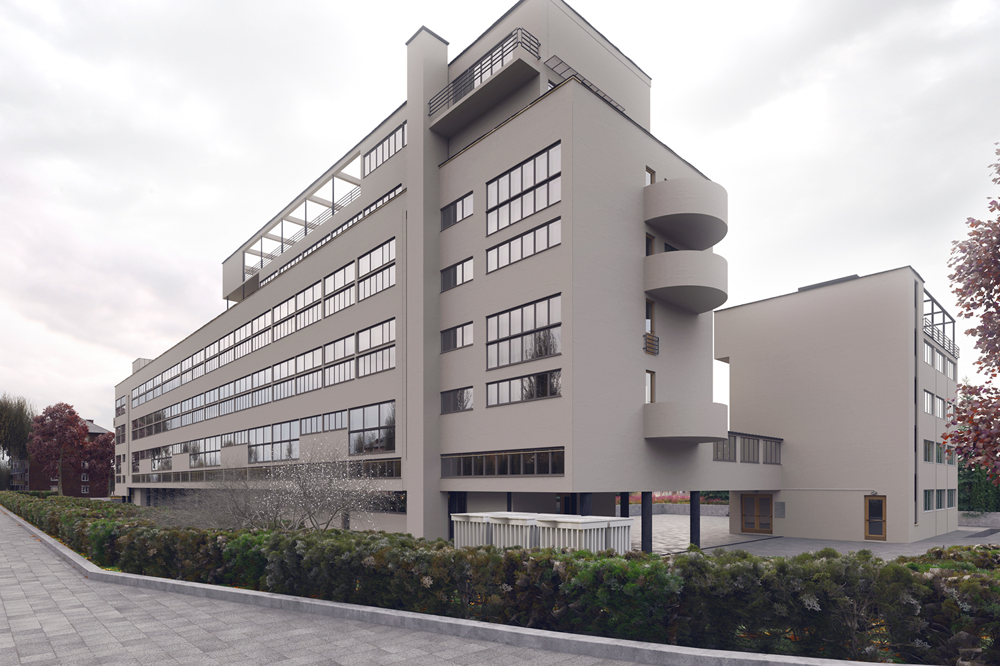

Дом Наркомфина — один из ключевых памятников жилой архитектуры конструктивизма, «опытный дом переходного типа». Построен в 1928—1930 годах по проекту архитекторов Моисея Гинзбурга, Игнатия Милиниса и инженера Сергея Прохорова для работников Народного комиссариата финансов СССР (Наркомфина). Находится в Москве на Новинском бульваре.
Долгое время находился в аварийном состоянии, был трижды включен в список «100 главных зданий мира, которым грозит уничтожение». В 2017 году началась реставрация по проекту мастерской Алексея Гинзбурга, внука М.Я. Гинзбурга.
Дом Наркомфина, или 2-й дом Совнаркома РСФСР, стал одним из экспериментальных домов, построенных по результатам теоретических исследований Секции типизации Стройкома РСФСР, работавшей в 1928-1929 годы под руководством М.Я. Гинзбурга. Работе секции предшествовал конкурс на «эскизный проект жилого дома трудящихся», проведенный журналом «Современная архитектура» (Гинзбург подал на конкурс проект «Коммунального дома А-1»), выставка проектов конкурса в 1927 году., и строительство дома Госстраха на Малой Бронной (1926-1927, М.Я. Гинзбург и В.Н. Владимиров). И журнал, и конкурс, и работа Секции типизации были проектами ОСА (Объединения современных архитекторов).
Работа Секции типизации, подробно описанная М.Я. Гинзбургом в книге «Жилище», началась с анализа типологии «дореволюционного «доходного дома» и состояла в достижении максимально эффективных параметров использования объема жилого пространства при сохранении его комфортности. Было разработано несколько типов квартир-ячеек, названных буквами от A до F. Результаты исследования секции М.Я. Гинзбург доложил на пленуме Стройкома РСФСР, где было принято постановление, рекомендовавшее несколько жилых ячеек к массовому строительству, а остальные — к опытно-показательному, начиная с 1928 года. Согласно этому постановлению было построено шесть «экспериментальных коммунальных домов переходного типа» в Москве, Свердловске и Саратове, причем в строительстве трех из них участвовал сам М.Я. Гинзбург. С.О. Хан-Магомедов называет дом Наркомата финансов самым интересным из этих шести домов .
Определенную роль в формулировании и решении проблемы создания жилого дома нового типа на примере дома Наркомата финансов сыграл Николай Милютин, известный как автор схем социалистического расселения и градостроительных концепций соцгорода, который в указанные годы (1924—1929) исполнял обязанности наркома финансов РСФСР и выступал в качестве заказчика жилого комплекса. По теории Милютина, отражавшей правительственную установку, «значительное повышение жизненного уровня рабочих и развитие обобществлённых форм обслуживания бытовых нужд трудящихся (общественное питание, ясли, детские сады, клубы и т.п.) постепенно уничтожают значение семьи как хозяйственного соединения. Этот процесс неизбежно приведёт, в конечном счёте, к полной переделке семейных форм общежития. Задача раскрепощения женщины от мелкого домашнего хозяйства и вовлечение её в произодство заставляет нас ставить вопрос о всемерном содействии этому процессу».
Идеи, связанные с планировочной и объемной структурой, также как и с функциональным наполнением дома, изложены в книге М.Я. Гинзбурга «Жилище», где работе Секции типизации посвящена одна глава, а дому Наркомфина — три главы; идеология дома также была озвучена М.Я. Гинзбургом на пленуме Стройкома. Согласно М.Я. Гинзбургу, анализ типов жилья в доходном доме показывает, что его «экономический эффект» был более высоким, чем «массовое жилищное строительство Москвы первых лет после революции» (т.н. моссоветское строительство).
Работа Секции типизации шла по пути «урезывания и уплотнения обслуживающих площадей» взятой за прототип типологии доходного дома: вначале удалили вторые лестницы и комнаты домработниц, затем оптимизировали коридоры, передние, ванные комнаты и кухни, сохраняя объем и высоту жилых помещений и урезая как площадь, так и высоту подсобных. Приведенные в книге расчеты эффективности использования жилого пространства построены на рассмотрении отношения кубатуры к жилой площади квартир и параметра k (k=W/P, соотношение общей кубатуры здания к полезной площади жилых ячеек). М.Я. Гинзбург ссылается как на расчеты, так и на «опытную работу передовых архитекторов Запада».
Основной акцент архитекторы сделали на встроенную мебель и компактные сантехнические ячейки. Именно отсюда берёт начало практика совмещения ванной комнаты с туалетом, знакомая нескольким поколениям советских людей. «Они пытались сократить лишние движения обитателей квартир, а также считали необходимым предложить им питаться в общественных столовых, мыться в общественных банях, сдавать бельё в механические прачечные, читать и отдыхать в библиотеках и клубах».
Дом Наркомата финансов нередко называют «домом-коммуной», что неверно: автор проекта М.Я. Гинзбург противопоставлял свой «дом переходного типа» (от «буржуазного» дома к «социалистической» коммуне, поскольку в нём не полностью уничтожалась семейная структура, как это предполагалось в домах-коммунах) практике домов-коммун и жестко критиковал последнюю:
«...конвейер, по которому течет здесь нормированная жизнь, напоминает прусскую казарму <...> Нет нужды доказывать абстрактную утопичность и ошибочную социальную сущность всех этих проектов. <...> Нельзя не заметить во всей этой программе механического процесса увеличения до астрономических размеров молекулярных элементов бытового уклада старой семьи».
В проектной документации дом именовался 2-м домом СНК. Согласно проекту, комплекс должен был состоять из четырех корпусов:
Также планировалось, что рядом с домом Наркомфина будет построен второй жилой дом с большими квартирами — ячейками типа К или D. Не реализован.